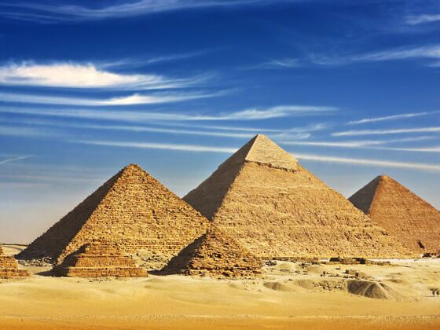
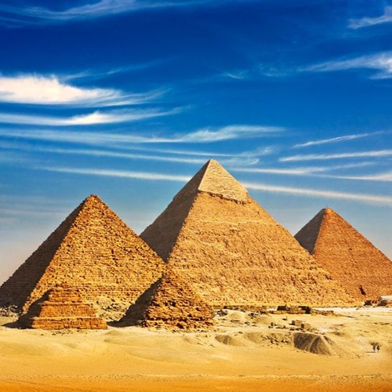
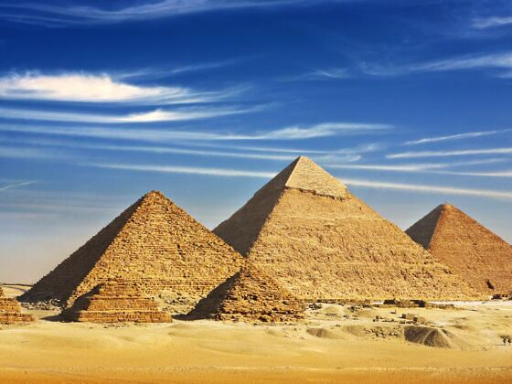
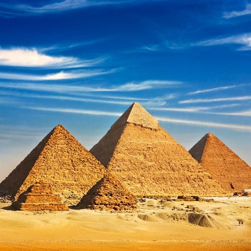
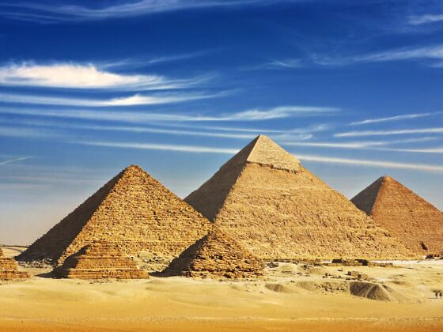
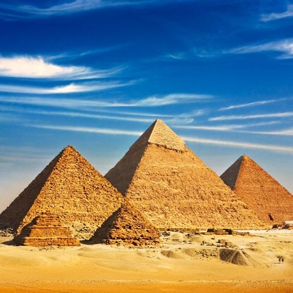

la république arabe d'Égypte est un pays transcontinental se trouvant en Afrique du Nord-Est et, pour la péninsule du Sinaï, en Asie de l'Ouest. Située sur la côte sud de la Méditerranée orientale, le bassin Levantin, le pays a des frontières terrestres avec la Libye à l'ouest, le Soudan au sud, la mer Rouge à l'est, et Israël et la bande de Gaza de la Palestine au nord-est. La capitale, et la ville la plus peuplée du pays, est Le Caire. Avec plus de 109 millions d'habitants en 2021, l'Égypte est le troisième pays le plus peuplé d'Afrique derrière le Nigeria et l'Éthiopie. La surface du pays est largement recouverte par le Sahara et la population est fortement concentrée sur les rives du Nil. Berceau de la civilisation, l'Égypte antique a connu les premiers développements de l'écriture, l'agriculture, le gouvernement centralisé et la religion organisée au cours de plus de trois millénaires av. J.-C.. Des monuments emblématiques tels le Sphinx de Gizeh, les pyramides de Gizeh et la vallée des Rois reflètent cet héritage et demeurent des sources importantes d'intérêt scientifique et populaire. Pendant la période de domination romaine, l'Égypte est devenue l'un des premiers centres du christianisme avant d'être islamisée par les conquêtes arabes du viie siècle. L'Égypte demeure un pays principalement musulman avec une minorité chrétienne importante.

